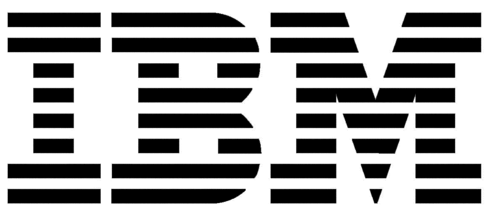

Research scientist · Senior AI consultant.
Three problems. Where they all meet is where I work. Each dot is a paper.
Since LLMs, new avenues to scale qualitative inquiry — particularly citizen-perspective elicitation at scale, combining LLMs and network analysis to surface and structure open-ended responses.
Catching generative AI in the act of reshaping language, cognition, and group behaviour. Observational studies of large media corpora (YouTube, podcasts, social media) for societal drifts and misinformation events; controlled behavioural experiments; LLMs used as instruments to study LLM effects.
Translating findings into evidence the policymaking process can use — in time, not after. Reporting, expert deliberation (Rapid Think Tanks), citizen elicitation on policy, brainstorming at scale.
Industry below the line, academia above — for ten years.
Now: Dresden, Berlin, the next wave.
Research Associate at TU Dresden (SynoSys + ScaDS.AI) with Philipp Lorenz-Spreen; Guest Researcher at the MPI for Human Development, Berlin.
Large ongoing projects (Yakura et al. and beyond) keep accumulating evidence that LLMs reshape spoken language — and the question is now scaling out. Identifying AI-driven societal drifts (linguistic, behavioural, cognitive, cultural), spotting the quasi-isolated environments where they can be measured cleanly, and combining macroscopic observation with controlled experiments on participants.
In parallel, mapping research directions and policy avenues to react in time — drawing on lessons from how slowly society absorbed the impacts of social media. The burden of preventing and mitigating these risks shouldn't sit with providers alone; citizens, users, and institutions need to be equipped to address them.
POLTOOLS at MPI's ARC — where the PhD took shape.
Doctoral researcher at the MPI for Human Development's Center for Adaptive Rationality, under Stefan Herzog and in collaboration with Stephan Lewandowsky and Ulrike Hahn. Lead developer on the work packages of the DFG-funded POLTOOLS project — “Assisting behavioural science and evidence-based policy making using online machine tools.”
The original brief: build LLM- and network-based tools for citizen-perspective elicitation, argument mining, and behavioural-science methodology — informed by what the pandemic exposed about misinformation waves, restricted research-data access, and a sluggish science–policy loop. Also co-organised SciBeh's workshop cycle (2023–2025) as the community-facing arm of that work.
The packages then absorbed the GenAI wave, becoming the platform for the empirical-drift papers (Yakura, ANYAS, hypercustomization, metacognition) and the method papers (citizen perspectives, RTT). Published in Nature Human Behaviour, Behavioral Science & Policy, and the Annals of the NYAS. The cumulative PhD thesis draws on this body of work; defense expected in 2026.
Two tracks at once: industry by day, research after hours.
Senior AI/NLP engineer at DB Systel (Deutsche Bahn IT), Berlin. Designed and shipped ML/NLP services for the digitalisation and automation of text-based processes across DB business units — document classification, NER, image segmentation, OCR pipelines, and information-retrieval systems running on internal infrastructure. Headline work: argument classification on customer correspondence (extracting structured complaint reasons from open-text letters) and an OCR-based document-intelligence pipeline for downstream classification and routing.
In parallel, External Research Affiliate at UNED's NLP & IR Group (Madrid, remote): focus on argument mining in the health domain, extending the MSc thesis work into computational measurement of controversy in non-political domains (drug-review forums, healthcare communities), with annotated datasets of user-review argumentation. The methodological foundation that fed the TU Berlin PhD.
MSc · Language Technologies.
Máster Universitario en Tecnologías del Lenguaje at UNED Madrid (online), specialisation in Natural Language Processing & Information Retrieval. Taken alongside the IBM Germany / DB Systel roles.
Coursework: Web Mining · Web Search Engines · Data Mining · Textual Information Discovery · Graph-Based Techniques Applied to NLP.
Master's Dissertation (NLP & Information Retrieval): “Controversy detection in online drug-review forums” — a miniature of the computational-controversy method and pipeline that later expanded into the UNED affiliate research and, eventually, the TU Berlin PhD.

IBM · five years architecting AI from R&D to production.
IBM Spain (Madrid, 2016–2018) — first AI role. Among the first wave of production conversational systems deployed in Spain, across banking, insurance, retail, energy, and infrastructure on IBM Watson. Pre-LLM era meant the long version of NLP delivery: scoping, interviewing domain experts, restructuring fragmentary client knowledge bases that often weren't fit for purpose, designing dialogue flows / intents / IR layer end-to-end, then integrating with backend stacks (SQL, NoSQL, MongoDB, Elastic Search). This is where I learned to architect AI systems, not just write components.
Project work consolidated into four threads: conversational assistants (banking, retail, customer service); cognitive search & information retrieval (Watson Explorer + custom indexing); document classification and OCR pipelines (insurance, banking); and PoC / R&D explorations — IoT route optimisation for fleet operators, drone-based visual recognition, predictive analytics for assurance.
IBM Germany (Berlin, 2018–2020) — AI & Data Consultant. More document-classification pipelines, knowledge-base construction, and chatbot development — extended into the automotive sector alongside the existing banking, retail, insurance, and media mix.
Beginnings · physics, with an ESA traineeship.
BSc in Physics at Universidad de Granada, with an engineering traineeship at the European Space Agency in Madrid (2015) on the Cluster Mission — the first job that mixed real measurement data with code.
The Granada concentration sat on a computational mathematical-physics spine — mathematical methods, quantum mechanics, statistical mechanics, electromagnetism — plus the computational layer (programming, numerical methods, simulation). Topics on the math-physics side included Quantum Field Theory, Hilbert spaces and linear operators, differential geometry, PDEs, and the philosophical foundations of quantum physics.
That stack — analysis, statistics, signal processing, simulation, programming — became the toolbox that later transferred cleanly into NLP, machine learning, and computational social science. The drift into AI was a natural extension of how I'd already learned to handle data.
A short bibliography. Full list in CV →
Where the work has been written about.
Awarded funding I am named on, with role.
Convening discussions across behavioural science, AI, and policy.
Recent first.